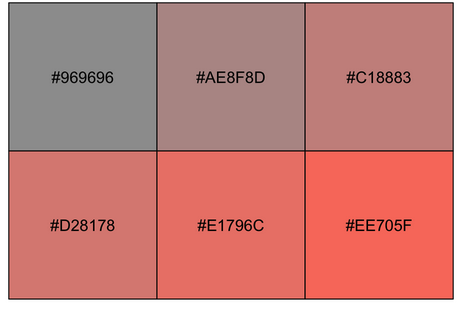

Understanding hex codes and col2hcl
By Nicholas Vietto
April 6, 2024
What are hex codes?
Hexadecimals, or ‘hex codes,’ operate on a number system with a base value of 16, hence the term ‘hex.’ In R, we use them to integrate colors into plots, presentations, websites or really anything. These codes represent colors through a blend of red, green, and blue (RGB) values, where each color is denoted by a two-digit hexadecimal number ranging from 00 (representing the absence of color) to FF (representing the maximum intensity). For instance, if we would like a pure red color, we’d utilize #FF0000, for green, #00FF00, or for blue, #0000FF. Similarly, we can produce a yellow shade with #FFFF00 or an aqua tone with #00FFFF. Additionally, we can use any number from 0 to 9 and any letter from A to F. For example, orange corresponds to #FFA500, while tomato red is represented by #FF6347.
Where do we locate them?
There are some great online resources like ColorHexa, this color cheatsheet, or just Google in general. However, another way to locate them within your RStudio IDE is utilizing the {scales} package and the col2hcl function. Let’s walk through some steps to see how.
Install and load
# install.packages("scales")
library(scales)
Find a color
colors(distinct = TRUE)
Use show_col and col2hcl to show the color code.
show_col(col2hcl("royalblue"))
Boom! Now that we’ve got our color code, let’s explore further. There’s a similar method for looking up multiple color codes and adjusting the hue, chroma, and luminance if the exact color you want isn’t known.
Let’s check out some variations in tomato üçÖ colors!
tomatoes <- rep("tomato", 6) # we have to create a vector here to allow multiple to show
show_col(col2hcl(tomatoes, h = seq( 0, 25, length = 6))) # we are modifying our hue here

Lets break this down.
show_col allows the visualization to occur in R.
col2hcl is responsible for providing us with the hexadecimal codes for colors.
- We throw in our vector (i.e, our üçÖ).
h or hue, which modifies the color slightly
- Then we can modify our hue a bit with seq any number between [0, 360].
length this just lets R know how many color we want to show.
We can also modify our chroma and/or luminance.
If you want the intensity to change we can use the chroma argument. We use a similar process as before but this time we use “c”. The range for chroma is [0, 100].
show_col(col2hcl(tomatoes, c = seq( 0, 25, length = 6)))

Yikes, wouldn’t want to eat those tomatoes.
Lets max the argument out and see what happens.
show_col(col2hcl(tomatoes, c = seq( 0, 100, length = 6)))

A better variation to choose from.
If we want to look at variations in the intensity of our üçÖs we can use the luminance or l argument.
Our luminescence range is [0, 100]
show_col(col2hcl(tomatoes, l = seq( 0, 100, length = 6)))

BA1F00 and F85D3F are looking like suitable üçÖs.
Final thoughts
Like anything in R, there’s a million ways to do one thing and this is just another option to locating your color codes. For more information, check out modify standard R colour in hcl colour space.
- Posted on:
- April 6, 2024
- Length:
- 3 minute read, 520 words
- See Also: